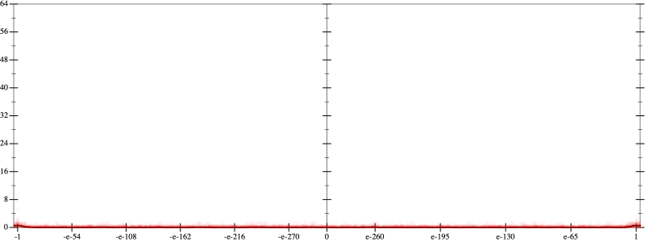
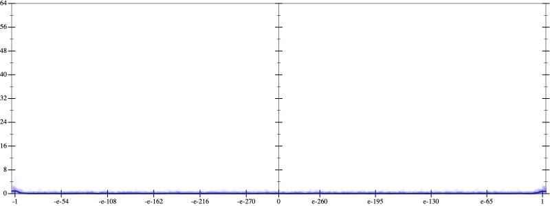
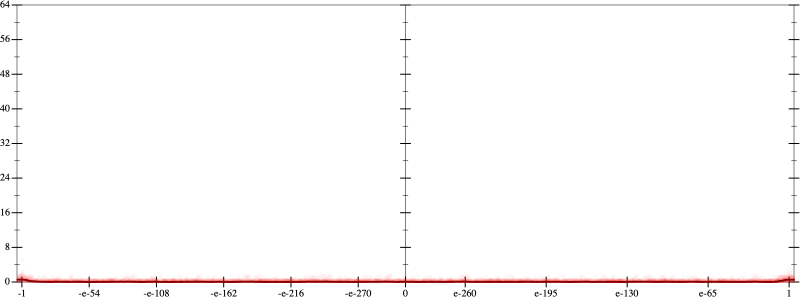
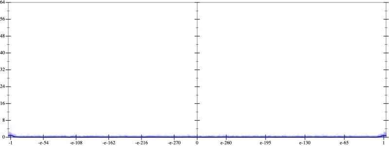

Initial program 0.1
\[\left(120.0 \cdot x + -160.0 \cdot \left(\left(x \cdot x\right) \cdot x\right)\right) + 32.0 \cdot \left(\left(\left(\left(x \cdot x\right) \cdot x\right) \cdot x\right) \cdot x\right)\]
- Using strategy
rm Applied pow30.1
\[\leadsto \left(120.0 \cdot x + -160.0 \cdot \left(\left(x \cdot x\right) \cdot x\right)\right) + 32.0 \cdot \left(\left(\color{blue}{{x}^{3}} \cdot x\right) \cdot x\right)\]
Applied pow-plus0.0
\[\leadsto \left(120.0 \cdot x + -160.0 \cdot \left(\left(x \cdot x\right) \cdot x\right)\right) + 32.0 \cdot \left(\color{blue}{{x}^{\left(3 + 1\right)}} \cdot x\right)\]
- Using strategy
rm Applied add-cube-cbrt0.1
\[\leadsto \left(120.0 \cdot x + -160.0 \cdot \left(\left(x \cdot x\right) \cdot x\right)\right) + 32.0 \cdot \color{blue}{\left(\left(\sqrt[3]{{x}^{\left(3 + 1\right)} \cdot x} \cdot \sqrt[3]{{x}^{\left(3 + 1\right)} \cdot x}\right) \cdot \sqrt[3]{{x}^{\left(3 + 1\right)} \cdot x}\right)}\]
Taylor expanded around 0 31.6
\[\leadsto \left(120.0 \cdot x + -160.0 \cdot \left(\left(x \cdot x\right) \cdot x\right)\right) + 32.0 \cdot \left(\left(\sqrt[3]{{x}^{\left(3 + 1\right)} \cdot x} \cdot \sqrt[3]{{x}^{\left(3 + 1\right)} \cdot x}\right) \cdot \color{blue}{e^{\frac{1}{3} \cdot \left(\log x + \log \left({x}^{4}\right)\right)}}\right)\]
Applied simplify0.1
\[\leadsto \color{blue}{\left(\sqrt[3]{{x}^{\left(3 + 1\right)} \cdot x} \cdot {\left(\sqrt[3]{x}\right)}^{\left(1 + 4\right)}\right) \cdot \left(\sqrt[3]{{x}^{\left(3 + 1\right)} \cdot x} \cdot 32.0\right) + \left(120.0 \cdot x + \left(x \cdot x\right) \cdot \left(-160.0 \cdot x\right)\right)}\]
 
